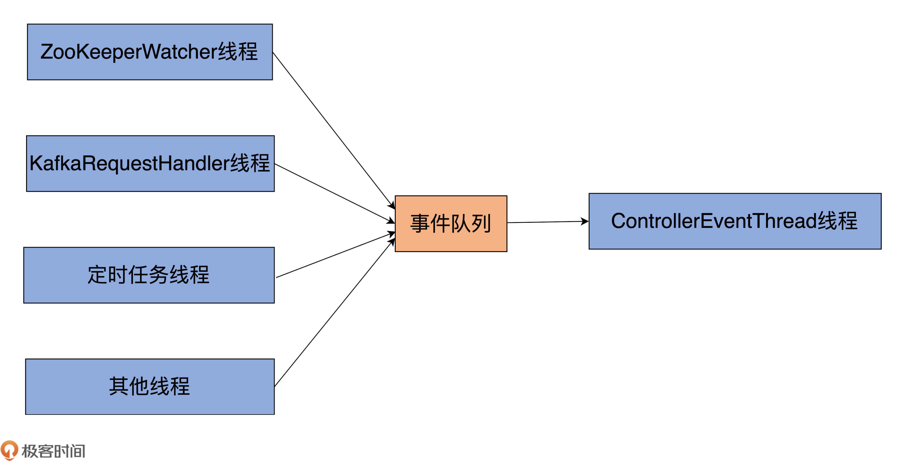
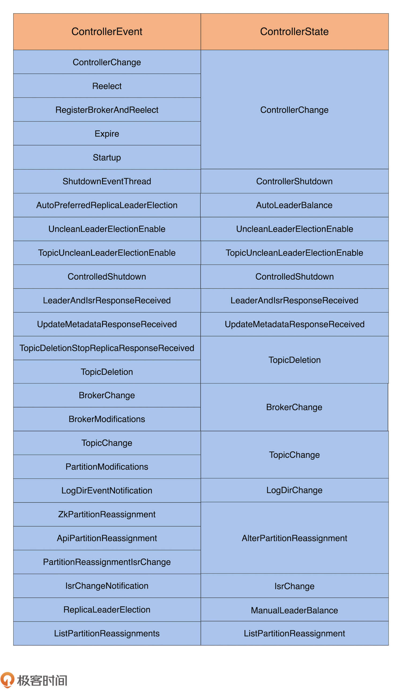
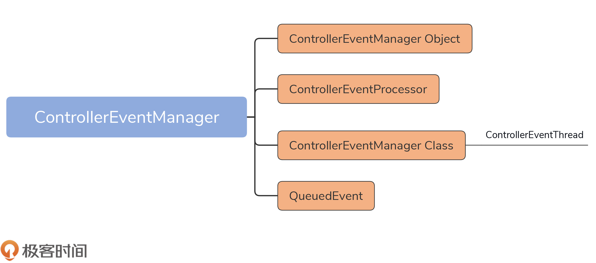
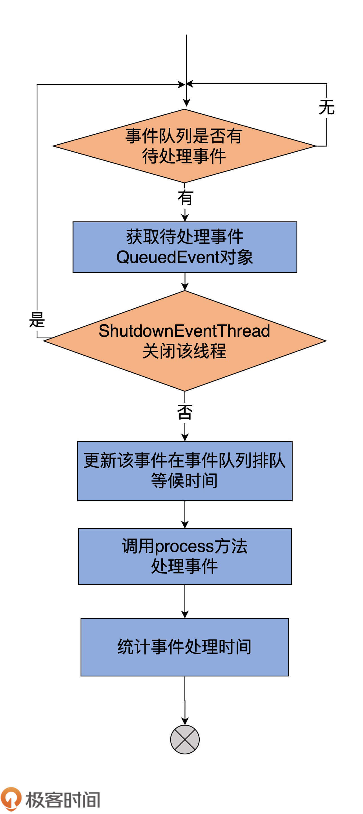
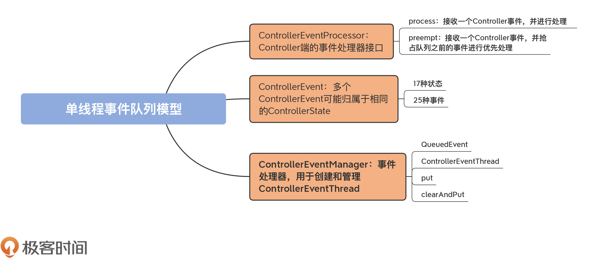

- 00 导读 构建Kafka工程和源码阅读环境、Scala语言热身.md.html
- 00 开篇词 阅读源码，逐渐成了职业进阶道路上的“必选项”.md.html
- 00 重磅加餐 带你快速入门Scala语言.md.html
- 01 日志段：保存消息文件的对象是怎么实现的？.md.html
- 02 日志（上）：日志究竟是如何加载日志段的？.md.html
- 03 日志（下）：彻底搞懂Log对象的常见操作.md.html
- 04 索引（上）：改进的二分查找算法在Kafka索引的应用.md.html
- 05 索引（下）：位移索引和时间戳索引的区别是什么？.md.html
- 06 请求通道：如何实现Kafka请求队列？.md.html
- 07 SocketServer（上）：Kafka到底是怎么应用NIO实现网络通信的？.md.html
- 08 SocketServer（中）：请求还要区分优先级？.md.html
- 09 SocketServer（下）：请求处理全流程源码分析.md.html
- 10 KafkaApis：Kafka最重要的源码入口，没有之一.md.html
- 11 Controller元数据：Controller都保存有哪些东西？有几种状态？.md.html
- 12 ControllerChannelManager：Controller如何管理请求发送？.md.html
- 13 ControllerEventManager：变身单线程后的Controller如何处理事件？.md.html
- 14 Controller选举是怎么实现的？.md.html
- 15 如何理解Controller在Kafka集群中的作用？.md.html
- 16 TopicDeletionManager： Topic是怎么被删除的？.md.html
- 17 ReplicaStateMachine：揭秘副本状态机实现原理.md.html
- 18 PartitionStateMachine：分区状态转换如何实现？.md.html
- 19 TimingWheel：探究Kafka定时器背后的高效时间轮算法.md.html
- 20 DelayedOperation：Broker是怎么延时处理请求的？.md.html
- 21 AbstractFetcherThread：拉取消息分几步？.md.html
- 22 ReplicaFetcherThread：Follower如何拉取Leader消息？.md.html
- 23 ReplicaManager（上）：必须要掌握的副本管理类定义和核心字段.md.html
- 24 ReplicaManager（中）：副本管理器是如何读写副本的？.md.html
- 25 ReplicaManager（下）：副本管理器是如何管理副本的？.md.html
- 26 MetadataCache：Broker是怎么异步更新元数据缓存的？.md.html
- 27 消费者组元数据（上）：消费者组都有哪些元数据？.md.html
- 28 消费者组元数据（下）：Kafka如何管理这些元数据？.md.html
- 29 GroupMetadataManager：组元数据管理器是个什么东西？.md.html
- 30 GroupMetadataManager：位移主题保存的只是位移吗？.md.html
- 31 GroupMetadataManager：查询位移时，不用读取位移主题？.md.html
- 32 GroupCoordinator：在Rebalance中，Coordinator如何处理成员入组？.md.html
- 33 GroupCoordinator：在Rebalance中，如何进行组同步？.md.html
- 特别放送（一）经典的Kafka学习资料有哪些？.md.html
- 特别放送（三）我是怎么度过日常一天的？.md.html
- 特别放送（二）一篇文章带你了解参与开源社区的全部流程.md.html
- 特别放送（五） Kafka 社区的重磅功能：移除 ZooKeeper 依赖.md.html
- 特别放送（四）20道经典的Kafka面试题详解.md.html
- 结束语 源码学习，我们才刚上路呢.md.html
- 捐赠
13 ControllerEventManager：变身单线程后的Controller如何处理事件？
你好，我是胡夕。 今天，我们来学习下Controller的单线程事件处理器源码。
所谓的单线程事件处理器，就是Controller端定义的一个组件。该组件内置了一个专属线程，负责处理其他线程发送过来的Controller事件。另外，它还定义了一些管理方法，用于为专属线程输送待处理事件。
在0.11.0.0版本之前，Controller组件的源码非常复杂。集群元数据信息在程序中同时被多个线程访问，因此，源码里有大量的Monitor锁、Lock锁或其他线程安全机制，这就导致，这部分代码读起来晦涩难懂，改动起来也困难重重，因为你根本不知道，变动了这个线程访问的数据，会不会影响到其他线程。同时，开发人员在修复Controller Bug时，也非常吃力。
鉴于这个原因，自0.11.0.0版本开始，社区陆续对Controller代码结构进行了改造。其中非常重要的一环，就是将多线程并发访问的方式改为了单线程的事件队列方式。
这里的单线程，并非是指Controller只有一个线程了，而是指对局部状态的访问限制在一个专属线程上，即让这个特定线程排他性地操作Controller元数据信息。
这样一来，整个组件代码就不必担心多线程访问引发的各种线程安全问题了，源码也可以抛弃各种不必要的锁机制，最终大大简化了Controller端的代码结构。
这部分源码非常重要，它能够帮助你掌握Controller端处理各类事件的原理，这将极大地提升你在实际场景中处理Controller各类问题的能力。因此，我建议你多读几遍，彻底了解Controller是怎么处理各种事件的。
基本术语和概念
接下来，我们先宏观领略一下Controller单线程事件队列处理模型及其基础组件。

从图中可见，Controller端有多个线程向事件队列写入不同种类的事件，比如，ZooKeeper端注册的Watcher线程、KafkaRequestHandler线程、Kafka定时任务线程，等等。而在事件队列的另一端，只有一个名为ControllerEventThread的线程专门负责“消费”或处理队列中的事件。这就是所谓的单线程事件队列模型。
参与实现这个模型的源码类有4个。
- ControllerEventProcessor：Controller端的事件处理器接口。
- ControllerEvent：Controller事件，也就是事件队列中被处理的对象。
- ControllerEventManager：事件处理器，用于创建和管理ControllerEventThread。
- ControllerEventThread：专属的事件处理线程，唯一的作用是处理不同种类的ControllEvent。这个类是ControllerEventManager类内部定义的线程类。
今天，我们的重要目标就是要搞懂这4个类。就像我前面说的，它们完整地构建出了单线程事件队列模型。下面我们将一个一个地学习它们的源码，你要重点掌握事件队列的实现以及专属线程是如何访问事件队列的。
ControllerEventProcessor
这个接口位于controller包下的ControllerEventManager.scala文件中。它定义了一个支持普通处理和抢占处理Controller事件的接口，代码如下所示：
trait ControllerEventProcessor {
def process(event: ControllerEvent): Unit
def preempt(event: ControllerEvent): Unit
}
该接口定义了两个方法，分别是process和preempt。
- process：接收一个Controller事件，并进行处理。
- preempt：接收一个Controller事件，并抢占队列之前的事件进行优先处理。
目前，在Kafka源码中，KafkaController类是Controller组件的功能实现类，它也是ControllerEventProcessor接口的唯一实现类。
对于这个接口，你要重点掌握process方法的作用，因为它是实现Controller事件处理的主力方法。你要了解process方法处理各类Controller事件的代码结构是什么样的，而且还要能够准确地找到处理每类事件的子方法。
至于preempt方法，你仅需要了解，Kafka使用它实现某些高优先级事件的抢占处理即可，毕竟，目前在源码中只有两类事件（ShutdownEventThread和Expire）需要抢占式处理，出镜率不是很高。
ControllerEvent
这就是前面说到的Controller事件，在源码中对应的就是ControllerEvent接口。该接口定义在KafkaController.scala文件中，本质上是一个trait类型，如下所示：
sealed trait ControllerEvent {
def state: ControllerState
}
每个ControllerEvent都定义了一个状态。Controller在处理具体的事件时，会对状态进行相应的变更。这个状态是由源码文件ControllerState.scala中的抽象类ControllerState定义的，代码如下：
sealed abstract class ControllerState {
def value: Byte
def rateAndTimeMetricName: Option[String] =
if (hasRateAndTimeMetric) Some(s"${toString}RateAndTimeMs") else None
protected def hasRateAndTimeMetric: Boolean = true
}
每类ControllerState都定义一个value值，表示Controller状态的序号，从0开始。另外，rateAndTimeMetricName方法是用于构造Controller状态速率的监控指标名称的。
比如，TopicChange是一类ControllerState，用于表示主题总数发生了变化。为了监控这类状态变更速率，代码中的rateAndTimeMetricName方法会定义一个名为TopicChangeRateAndTimeMs的指标。当然，并非所有的ControllerState都有对应的速率监控指标，比如，表示空闲状态的Idle就没有对应的指标。
目前，Controller总共定义了25类事件和17种状态，它们的对应关系如下表所示：

内容看着好像有很多，那我们应该怎样使用这张表格呢？
实际上，你并不需要记住每一行的对应关系。这张表格更像是一个工具，当你监控到某些Controller状态变更速率异常的时候，你可以通过这张表格，快速确定可能造成瓶颈的Controller事件，并定位处理该事件的函数代码，辅助你进一步地调试问题。
另外，你要了解的是，多个ControllerEvent可能归属于相同的ControllerState。
比如，TopicChange和PartitionModifications事件都属于TopicChange状态，毕竟，它们都与Topic的变更有关。前者是创建Topic，后者是修改Topic的属性，比如，分区数或副本因子，等等。
再比如，BrokerChange和BrokerModifications事件都属于 BrokerChange状态，表征的都是对Broker属性的修改。
ControllerEventManager
有了这些铺垫，我们就可以开始学习事件处理器的实现代码了。
在Kafka中，Controller事件处理器代码位于controller包下的ControllerEventManager.scala文件下。我用一张图来展示下这个文件的结构：

如图所示，该文件主要由4个部分组成。
- ControllerEventManager Object：保存一些字符串常量，比如线程名字。
- ControllerEventProcessor：前面讲过的事件处理器接口，目前只有KafkaController实现了这个接口。
- QueuedEvent：表征事件队列上的事件对象。
- ControllerEventManager Class：ControllerEventManager的伴生类，主要用于创建和管理事件处理线程和事件队列。就像我前面说的，这个类中定义了重要的ControllerEventThread线程类，还有一些其他值得我们学习的重要方法，一会儿我们详细说说。
ControllerEventManager对象仅仅定义了3个公共变量，没有任何逻辑，你简单看下就行。至于ControllerEventProcessor接口，我们刚刚已经学习过了。接下来，我们重点学习后面这两个类。
QueuedEvent
我们先来看QueuedEvent的定义，全部代码如下：
// 每个QueuedEvent定义了两个字段
// event: ControllerEvent类，表示Controller事件
// enqueueTimeMs：表示Controller事件被放入到事件队列的时间戳
class QueuedEvent(val event: ControllerEvent,
val enqueueTimeMs: Long) {
// 标识事件是否开始被处理
val processingStarted = new CountDownLatch(1)
// 标识事件是否被处理过
val spent = new AtomicBoolean(false)
// 处理事件
def process(processor: ControllerEventProcessor): Unit = {
if (spent.getAndSet(true))
return
processingStarted.countDown()
processor.process(event)
}
// 抢占式处理事件
def preempt(processor: ControllerEventProcessor): Unit = {
if (spent.getAndSet(true))
return
processor.preempt(event)
}
// 阻塞等待事件被处理完成
def awaitProcessing(): Unit = {
processingStarted.await()
}
override def toString: String = {
s"QueuedEvent(event=$event, enqueueTimeMs=$enqueueTimeMs)"
}
}
可以看到，每个QueuedEvent对象实例都裹挟了一个ControllerEvent。另外，每个QueuedEvent还定义了process、preempt和awaitProcessing方法，分别表示处理事件、以抢占方式处理事件，以及等待事件处理。
其中，process方法和preempt方法的实现原理，就是调用给定ControllerEventProcessor接口的process和preempt方法，非常简单。
在QueuedEvent对象中，我们再一次看到了CountDownLatch的身影，我在[第7节课]里提到过它。Kafka源码非常喜欢用CountDownLatch来做各种条件控制，比如用于侦测线程是否成功启动、成功关闭，等等。
在这里，QueuedEvent使用它的唯一目的，是确保Expire事件在建立ZooKeeper会话前被处理。
如果不是在这个场景下，那么，代码就用spent来标识该事件是否已经被处理过了，如果已经被处理过了，再次调用process方法时就会直接返回，什么都不做。
ControllerEventThread
了解了QueuedEvent，我们来看下消费它们的ControllerEventThread类。
首先是这个类的定义代码：
class ControllerEventThread(name: String) extends ShutdownableThread(name = name, isInterruptible = false) {
logIdent = s"[ControllerEventThread controllerId=$controllerId] "
......
}
这个类就是一个普通的线程类，继承了ShutdownableThread基类，而后者是Kafka为很多线程类定义的公共父类。该父类是Java Thread类的子类，其线程逻辑方法run的主要代码如下：
def doWork(): Unit
override def run(): Unit = {
......
try {
while (isRunning)
doWork()
} catch {
......
}
......
}
可见，这个父类会循环地执行doWork方法的逻辑，而该方法的具体实现则交由子类来完成。
作为Controller唯一的事件处理线程，我们要时刻关注这个线程的运行状态。因此，我们必须要知道这个线程在JVM上的名字，这样后续我们就能有针对性地对其展开监控。这个线程的名字是由ControllerEventManager Object中ControllerEventThreadName变量定义的，如下所示：
object ControllerEventManager {
val ControllerEventThreadName = "controller-event-thread"
......
}
现在我们看看ControllerEventThread类的doWork是如何实现的。代码如下：
override def doWork(): Unit = {
// 从事件队列中获取待处理的Controller事件，否则等待
val dequeued = queue.take()
dequeued.event match {
// 如果是关闭线程事件，什么都不用做。关闭线程由外部来执行
case ShutdownEventThread =>
case controllerEvent =>
_state = controllerEvent.state
// 更新对应事件在队列中保存的时间
eventQueueTimeHist.update(time.milliseconds() - dequeued.enqueueTimeMs)
try {
def process(): Unit = dequeued.process(processor)
// 处理事件，同时计算处理速率
rateAndTimeMetrics.get(state) match {
case Some(timer) => timer.time { process() }
case None => process()
}
} catch {
case e: Throwable => error(s"Uncaught error processing event $controllerEvent", e)
}
_state = ControllerState.Idle
}
}
我用一张图来展示下具体的执行流程：

大体上看，执行逻辑很简单。
首先是调用LinkedBlockingQueue的take方法，去获取待处理的QueuedEvent对象实例。注意，这里用的是take方法，这说明，如果事件队列中没有QueuedEvent，那么，ControllerEventThread线程将一直处于阻塞状态，直到事件队列上插入了新的待处理事件。
一旦拿到QueuedEvent事件后，线程会判断是否是ShutdownEventThread事件。当ControllerEventManager关闭时，会显式地向事件队列中塞入ShutdownEventThread，表明要关闭ControllerEventThread线程。如果是该事件，那么ControllerEventThread什么都不用做，毕竟要关闭这个线程了。相反地，如果是其他的事件，就调用QueuedEvent的process方法执行对应的处理逻辑，同时计算事件被处理的速率。
该process方法底层调用的是ControllerEventProcessor的process方法，如下所示：
def process(processor: ControllerEventProcessor): Unit = {
// 若已经被处理过，直接返回
if (spent.getAndSet(true))
return
processingStarted.countDown()
// 调用ControllerEventProcessor的process方法处理事件
processor.process(event)
}
方法首先会判断该事件是否已经被处理过，如果是，就直接返回；如果不是，就调用ControllerEventProcessor的process方法处理事件。
你可能很关心，每个ControllerEventProcessor的process方法是在哪里实现的？实际上，它们都封装在KafkaController.scala文件中。还记得我之前说过，KafkaController类是目前源码中ControllerEventProcessor接口的唯一实现类吗？
实际上，就是KafkaController类实现了ControllerEventProcessor的process方法。由于代码过长，而且有很多重复结构的代码，因此，我只展示部分代码：
override def process(event: ControllerEvent): Unit = {
try {
// 依次匹配ControllerEvent事件
event match {
case event: MockEvent =>
event.process()
case ShutdownEventThread =>
error("Received a ShutdownEventThread event. This type of event is supposed to be handle by ControllerEventThread")
case AutoPreferredReplicaLeaderElection =>
processAutoPreferredReplicaLeaderElection()
......
}
} catch {
// 如果Controller换成了别的Broker
case e: ControllerMovedException =>
info(s"Controller moved to another broker when processing $event.", e)
// 执行Controller卸任逻辑
maybeResign()
case e: Throwable =>
error(s"Error processing event $event", e)
} finally {
updateMetrics()
}
}
这个process方法接收一个ControllerEvent实例，接着会判断它是哪类Controller事件，并调用相应的处理方法。比如，如果是AutoPreferredReplicaLeaderElection事件，则调用processAutoPreferredReplicaLeaderElection方法；如果是其他类型的事件，则调用process***方法。
其他方法
除了QueuedEvent和ControllerEventThread之外，put方法和clearAndPut方法也很重要。如果说ControllerEventThread是读取队列事件的，那么，这两个方法就是向队列生产元素的。
在这两个方法中，put是把指定ControllerEvent插入到事件队列，而clearAndPut则是先执行具有高优先级的抢占式事件，之后清空队列所有事件，最后再插入指定的事件。
下面这两段源码分别对应于这两个方法：
// put方法
def put(event: ControllerEvent): QueuedEvent = inLock(putLock) {
// 构建QueuedEvent实例
val queuedEvent = new QueuedEvent(event, time.milliseconds())
// 插入到事件队列
queue.put(queuedEvent)
// 返回新建QueuedEvent实例
queuedEvent
}
// clearAndPut方法
def clearAndPut(event: ControllerEvent): QueuedEvent = inLock(putLock) {
// 优先处理抢占式事件
queue.forEach(_.preempt(processor))
// 清空事件队列
queue.clear()
// 调用上面的put方法将给定事件插入到事件队列
put(event)
}
整体上代码很简单，需要解释的地方不多，但我想和你讨论一个问题。
你注意到，源码中的put方法使用putLock对代码进行保护了吗？
就我个人而言，我觉得这个putLock是不需要的，因为LinkedBlockingQueue数据结构本身就已经是线程安全的了。put方法只会与全局共享变量queue打交道，因此，它们的线程安全性完全可以委托LinkedBlockingQueue实现。更何况，LinkedBlockingQueue内部已经维护了一个putLock和一个takeLock，专门保护读写操作。
当然，我同意在clearAndPut中使用锁的做法，毕竟，我们要保证，访问抢占式事件和清空操作构成一个原子操作。
总结
今天，我们重点学习了Controller端的单线程事件队列实现方式，即ControllerEventManager通过构建ControllerEvent、ControllerState和对应的ControllerEventThread线程，并且结合专属事件队列，共同实现事件处理。我们来回顾下这节课的重点。
- ControllerEvent：定义Controller能够处理的各类事件名称，目前总共定义了25类事件。
- ControllerState：定义Controller状态。你可以认为，它是ControllerEvent的上一级分类，因此，ControllerEvent和ControllerState是多对一的关系。
- ControllerEventManager：Controller定义的事件管理器，专门定义和维护专属线程以及对应的事件队列。
- ControllerEventThread：事件管理器创建的事件处理线程。该线程排他性地读取事件队列并处理队列中的所有事件。

下节课，我们将正式进入到KafkaController的学习。这是一个有着2100多行的大文件，不过大部分的代码都是实现那27类ControllerEvent的处理逻辑，因此，你不要被它吓到了。我们会先学习Controller是如何选举出来的，后面会再详谈Controller的具体作用。
课后讨论
你认为，ControllerEventManager中put方法代码是否有必要被一个Lock保护起来？
欢迎你在留言区畅所欲言，跟我交流讨论，也欢迎你把今天的内容分享给你的朋友。
© 2019 - 2023 Liangliang Lee. Powered by gin and hexo-theme-book.